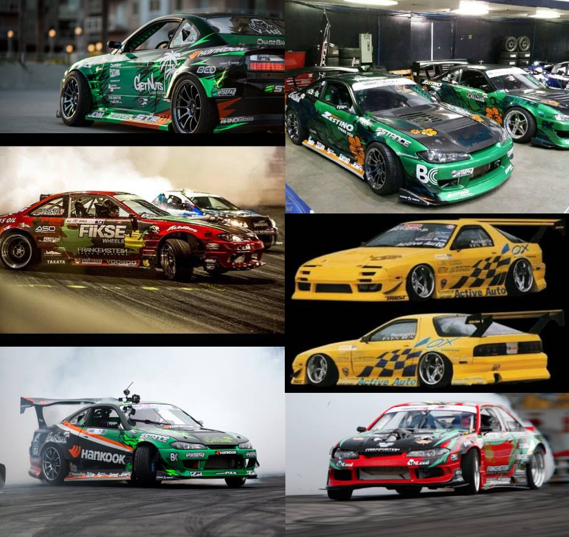
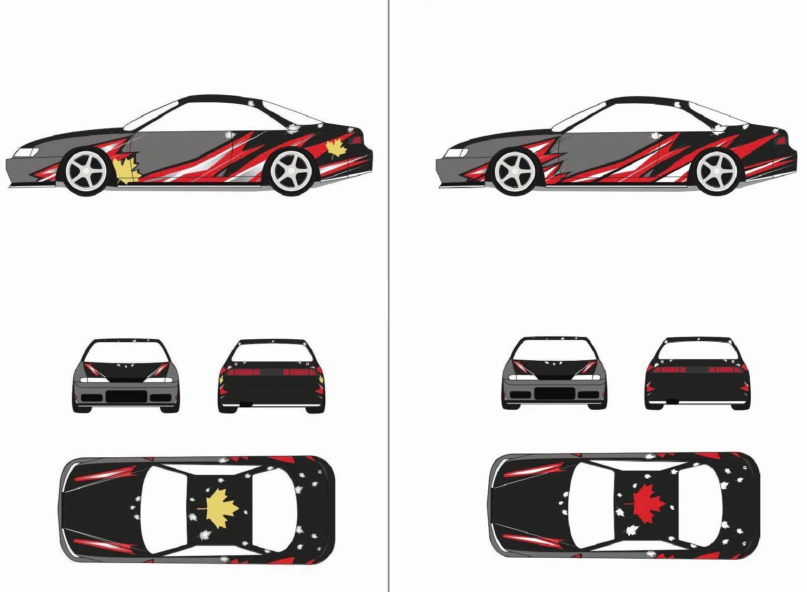

Overview:
While working at C17Media as a graphic design intern, I was given the project by Norman, the account manager, with the senior graphic designer, Abel, helping me in creating a livery for a drift car during the 2019 race season. The FDF Race Shop Nissan S14 competed in a variety of drifting competitions around Canada during the summer such as Drift Jam and CSCS Drift.
Design Prompt:
FDF Race Shop gave C17Media a few requirements which was the car had to transition from black to grey, and a design that is inspired by an existing Pro drift car design which had Canadian accents integrated into the livery.

Challenge:
Given the requirements, the hardest part I had to figure out was how to integrate a design that help transition the car from grey in the front and black in the rear. I could not use a gradient as the vinyl printed out would be costly.
Inspiration:
FDF Race Shop wanted their drift car to have a design to be inspired by a current pro drift car which has the maple leaf making up the shape of the stripes and accents. Another pro drift car I took inspiration was Pro Drifter Forest Wang’s S14 which had a transition of major colours as well as a symbol that represents Hawaii, the hibiscus flower incorporated in the design. My final inspiration was grassroot drift cars from Japan in the early 2000’s and the stripes that were on them.

Concept:
Take a symbol of Canada, the maple leaf, and create a dynamic stripe that brings nostalgic 2000’s Japanese drift car liveries.
Steps:
1. Research for inspiration
2. Create roughs for client to choose the design
3. Create high-fidelity of design with small variations for client to choose from
4. Add sponsor logos after the final design is choosen
5. Print vinyl wrap
6. Install vinyl wrap onto the real car

Goals:
1. Integrate stripes as part of transition between black and grey
2. Make the stripes dynamic and visually have action
3. Incorporate the maple leaf

Takeaway:
I learned that 2D design will look different on a 3D object. Since the car is curved and I drew the render in 2D, my design did not factor the curvature. I had the Abel on the team guide me on how my shapes would potentially look by mocking up tape on the real car. This gave me a new perspective on how 2D designed shapes will look on 3D surfaces.